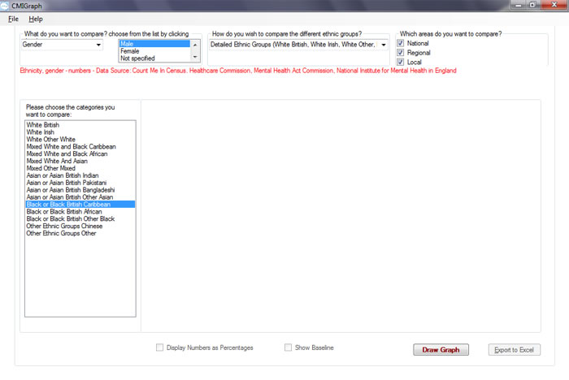
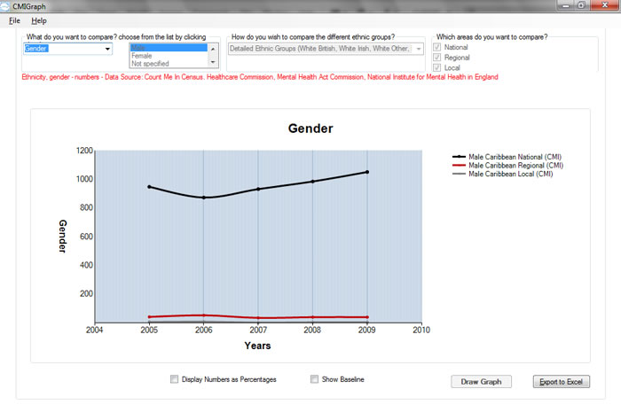
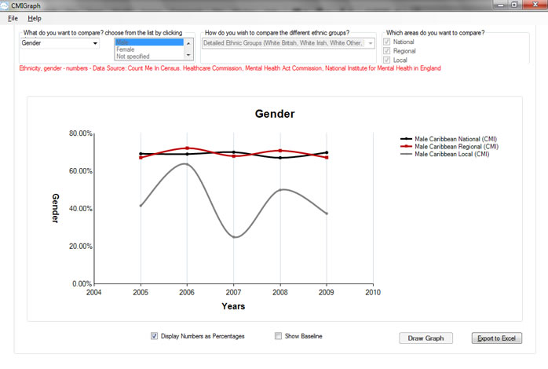
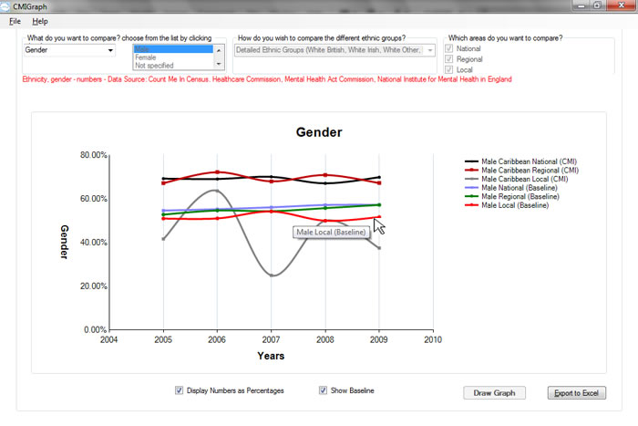

CMIGraph software is designed to show trends in the Count Me in Data. Users can choose which trends they wish to see mapped.
The best way of explaining this is to work through an example
First we run CMIGraph and choose Ethnicity as the subject of comparison, then choose persons, then choose the detailed way of comparison, then choose black caribbean as the category to compare as shown below

click the Draw Graph button to generate the trends. you will need to wait while CMIGrpah is collating and processing the data. the trends for the above particular case is shown below

the above graph shows the change in the numbers of in patients over the years. the black line shows that nationwide, the number of in patients of caribbean ethnicity has overall increased between the years 2006 and 2008.
For the above graph to make sense it is useful to represent the numbers as a percentage of the total number of in patients regardless of ethnicity.this can be acheived by clicking the check box "Display Numbers as percentages" the result is shown below

